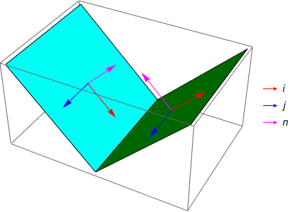

给定空间中 $8$ 个单位立方体，你需要判断它们是否构成一个 $4$ 维超立方体的 $3$ 维空间展开图。
第一行包含三个正整数 $L, W, H$ ($L, W, H \leq 8$)，表示能包围 $8$ 个立方体的一个长方体的长度、宽度和高度。
接下来 $W H$ 行，分为 $H$ 段，每段 $W$ 行。第 $i$ 段的第 $j$ 行包含一个由 . 和 x 构成的长度为 $L$ 的字符串，其中第 $k$ 个字符为 x 当且仅当 $\left( k, j, i \right)$ 处有一个立方体。
保证一共有 $8$ 个立方体 (x)，且如果对有公共面的立方体连边的话，则这 $8$ 个立方体构成一棵树。
输出一行，如果它们是一个 $4$ 维超立方体的 $3$ 维空间展开图，则输出 Yes，否则输出 No。
($4$ 维超立方体的 $3$ 维空间展开图有 $261$ 种，因此打表就别想了)
考虑三维的情形 (立方体的平面展开图)，我们考虑除了打表外有什么方便的写法。
对于一个立方体，如果我们给其中每个面规定一个单位法向量 (要么全部朝内，要么全部朝外)，则立方体的六个面的法向量刚好遍历 $\left( \pm 1, 0, 0 \right), \left( 0, \pm 1, 0 \right), \left( 0, 0, \pm 1 \right)$。
我们随便取一个面，固定它为底面，且设它的法向量为 $\left( 0, 0, 1 \right)$。考虑将其它面旋转上来，我们希望在旋转的时候动态维护出每个向量的法向量。但通过下面的例子可知，只维护法向量是不够的：
将上左图中的正方形折成如右图所示，则红色和粉色的面在上右图中均平行于 $Oxy$ 平面 (上右图为了显示折叠方式所以这么画)，从而它们的法向量平行。
考虑红色面，在平面图中位于它右侧的面 (即图中的绿色面) 在立体图中会折叠到它的右侧 ($x$ 轴正方向)，而对于粉色面，在平面图中位于它右侧的面 (如果存在) 在立体图中会折叠到它的前面 ($y$ 轴负方向)。
同样是右侧，且法向量平行，然而折叠到的方向却不平行。这说明只维护法向量是不够的。
更精确地是，我们要对于每个左图中的正方形，维护一组标准正交基 $\boldsymbol i, \boldsymbol j, \boldsymbol n$，表示它在对应的立体图中，平面图的 $\left( 1, 0 \right)$ 向量在空间中对应为 $\boldsymbol i$，$\left( 0, 1 \right)$ 向量在空间中对应为 $\boldsymbol j$，且法向量为 $\boldsymbol n$。
对于正交基的方向，我们可以规定 $\boldsymbol i, \boldsymbol j, \boldsymbol n$ 构成右手系，这样 $\boldsymbol n$ 就被唯一确定下来了。我们将行向量 $\boldsymbol i, \boldsymbol j, \boldsymbol n$ 构成的矩阵 $\begin{bmatrix} \boldsymbol i \\ \boldsymbol j \\ \boldsymbol n \end{bmatrix}$ 称为该正方形的特征矩阵。
考虑一次折叠，设我们现在要将正方形当前正方形与它 (位于平面图右侧即 $\left( 1, 0 \right)$) 的正方形拼接起来。原来这两个正方形是共面的，因此它们具有相同的特征矩阵 $\begin{bmatrix} \boldsymbol i \\ \boldsymbol j \\ \boldsymbol n \end{bmatrix}$。考虑将位于右侧的正方形转到左侧，右侧的正方形的特征矩阵的变化。
首先，可以发现，平面图中 $\left( 0, 1 \right)$ 向量在空间中对应的向量是不变的，即 $\boldsymbol j' = \boldsymbol j$。
然后，新的正方形的法向量等于原正方形指向左侧的向量 $- \boldsymbol i$。即 $\boldsymbol n' = - \boldsymbol i$。
新的正方形的右侧向量等于原正方形的法向量。即 $\boldsymbol i' = \boldsymbol n$。
结合上述结论，可知 $$ \begin{bmatrix} \boldsymbol i' \\ \boldsymbol j' \\ \boldsymbol n' \end{bmatrix} = \begin{bmatrix} 0 & 0 & 1 \\ 0 & 1 & 0 \\ -1 & 0 & 0 \end{bmatrix} \begin{bmatrix} \boldsymbol i \\ \boldsymbol j \\ \boldsymbol n \end{bmatrix} $$
也就是说，将右侧的正方形旋转到左侧来，右侧的正方形的特征矩阵就会作用上矩阵 $\mathbf M_R = \begin{bmatrix} 0 & 0 & 1 \\ 0 & 1 & 0 \\ -1 & 0 & 0 \end{bmatrix}$。
类似地，同样可以分析出左侧正方形过来的特征矩阵 $\mathbf M_L = \begin{bmatrix} 0 & 0 & -1 \\ 0 & 1 & 0 \\ 1 & 0 & 0 \end{bmatrix}$，以及上方的特征矩阵 $\mathbf M_U = \begin{bmatrix} 1 & 0 & 0 \\ 0 & 0 & 1 \\ 0 & -1 & 0 \end{bmatrix}$，下方的特征矩阵 $\mathbf M_D = \begin{bmatrix} 1 & 0 & 0 \\ 0 & 0 & -1 \\ 0 & 1 & 0 \end{bmatrix}$。
于是，固定底面后，我们对展开图进行搜索 (事实上由于是树形的，搜索结果是唯一的)，对于每个面，从 "底面" 走到它会有一串方向序列 (如右、上、右)，此时我们就对最初的特征矩阵 $\begin{bmatrix} \boldsymbol i \\ \boldsymbol j \\ \boldsymbol n \end{bmatrix}$ 依次左乘 $\mathbf M_R, \mathbf M_U, \mathbf M_U$，得到最终的特征矩阵。
如果最后 $6$ 个面的特征矩阵互不相同，则说明这个展开图是可行的，否则说明是不可行的。
完成了三维的判断后，四维的问题基本就没什么区别了。
首先，对于 $3$ 维空间展开图的的每个子立方体，我们都有对应的展开图中三个方向 (即 $\left( 1, 0, 0 \right), \left( 0, 1, 0 \right), \left( 0, 0, 1 \right)$) 对应于四维空间的三个向量，记为 $\boldsymbol i, \boldsymbol j, \boldsymbol k$，还有一个法向量 $\boldsymbol n$。同理，我们还是规定 $\boldsymbol i, \boldsymbol j, \boldsymbol k, \boldsymbol n$ 构成 "右手系"。由于四维空间的右手系不好描述，因此也可以表示成 $\det \begin{bmatrix} \boldsymbol i \\ \boldsymbol j \\ \boldsymbol k \\ \boldsymbol n \end{bmatrix} = 1$。
考虑旋转，不妨设将右侧，即 $\left( 1, 0, 0 \right)$ 侧的正方形拼接起来。类似地分析可知，新的立方体的特征矩阵等于原立方体的特征矩阵乘上一个固定的矩阵，记为 $\mathbf M_x^+$。同理定义 $\mathbf M_x^-, \mathbf M_y^\pm, \mathbf M_z^\pm$。
不难发现，新的立方体和原立方体中有平行于 $Oyz$ 平面的公共平面，因此它们的 $\boldsymbol j$ 向量和 $\boldsymbol k$ 向量是不变的，而剩下两个向量则互相交换。由于 $\left| \mathbf M_x^+ \right| = \left| \mathbf M_x^+ \right| \left| \mathbf A \right| = \left| \mathbf M_x^+ \mathbf A \right| = 1$，因此交换后必然带来一个向量的取反。
即 $$ \mathbf M_x^+ = \begin{bmatrix} 0 & 0 & 0 & 1 \\ 0 & 1 & 0 & 0 \\ 0 & 0 & 1 & 0 \\ -1 & 0 & 0 & 0 \end{bmatrix} $$
由几何意义知 $\mathbf M_x^+ \cdot \mathbf M_x^- = \mathbf I$，于是有 $$ \mathbf M_x^-= \begin{bmatrix} 0 & 0 & 0 & -1 \\ 0 & 1 & 0 & 0 \\ 0 & 0 & 1 & 0 \\ 1 & 0 & 0 & 0 \end{bmatrix} $$
(ps: 其实 $\mathbf M_x^+, \mathbf M_x^-$ 具体谁是谁不重要，由对称性知即使换过来也不影响该题的正确性，只要它们集合正确就行)
以此类推可知，$\mathbf M_y^\pm$ 就是交换第二行和第四行，$\mathbf M_z^\pm$ 就是交换第三行和第四行，然后是一正一负。具体谁正谁负也不重要。
剩下的部分就同三维的情形，固定一个底面后一边搜索一边乘矩阵，最后判断 $8$ 个立方体的特征矩阵是否互不相同即可。时间复杂度 $O \left( 1 \right)$。
#include <bits/stdc++.h>
using std::cin;
using std::cout;
const int N = 10;
int L, W, H, all;
char s[N][N][N];
void dfs(int i, int j, int k, int x, int y, int z, int w) {
s[i][j][k] = 0, all |= 1 << (w & 7);
if (s[i - 1][j][k] == 120) dfs(i - 1, j, k, w, y, z, ~x);
if (s[i + 1][j][k] == 120) dfs(i + 1, j, k, ~w, y, z, x);
if (s[i][j - 1][k] == 120) dfs(i, j - 1, k, x, w, z, ~y);
if (s[i][j + 1][k] == 120) dfs(i, j + 1, k, x, ~w, z, y);
if (s[i][j][k - 1] == 120) dfs(i, j, k - 1, x, y, w, ~z);
if (s[i][j][k + 1] == 120) dfs(i, j, k + 1, x, y, ~w, z);
}
int main() {
int i, j, k, ti = 0, tj = 0, tk = 0;
std::ios::sync_with_stdio(false), cin.tie(NULL);
cin >> L >> W >> H;
for (i = 1; i <= H; ++i)
for (j = 1; j <= W; ++j)
for (cin >> (s[i][j] + 1), k = 1; k <= L; ++k)
if (s[i][j][k] == 120) ti = i, tj = j, tk = k;
assert(s[ti][tj][tk] == 120), dfs(ti, tj, tk, 0, 1, 2, 3);
cout << (all == 255 ? "Yes\n" : "No\n");
return 0;
}
坑1：在具体实现时，注意到所有矩阵都是置换矩阵在若干个位置上取相反数，因此可以使用带正负号的置换来存储，节省空间。
坑2：字符串下标从 $1$ 开始可以避免判断数组越界。